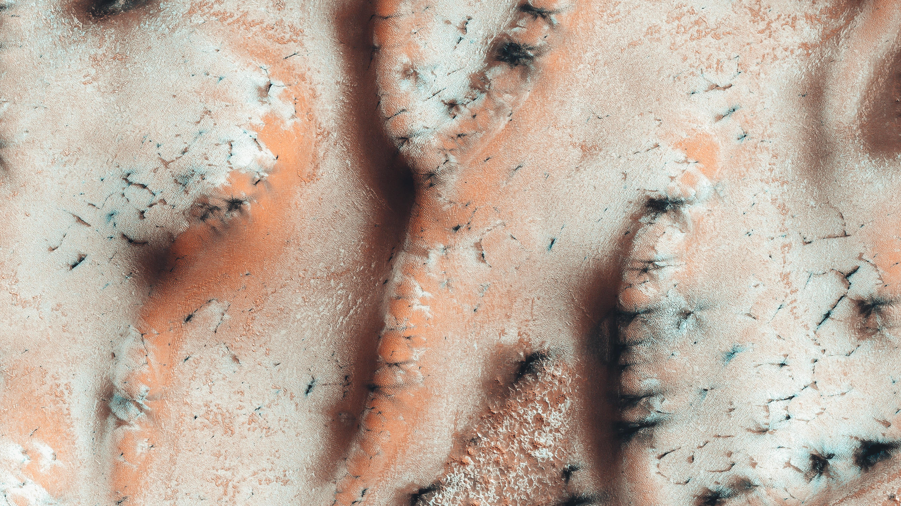

The floor and two wwalls of a pit in Noctis Labyrinthus, a sytem of deep, steep-walled valleys on the western edge of Valles Marineris.

In the winter a layer of carbon dioxide ice (dry ie) covers the north polar sand dunes.
This enhanced-color image shows a surface with diverse colors just outhwest of Nili Fossae.
CISM observations of this region of the Noctis Labyrinthus formation have shown indications of iron-bearing sulfates and phyllosilicate (clay) minerals.